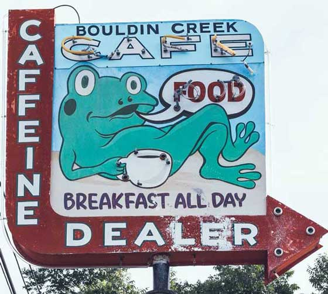
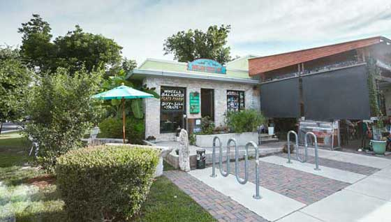
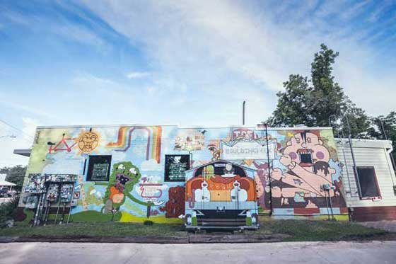
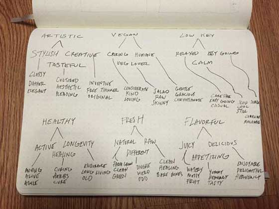
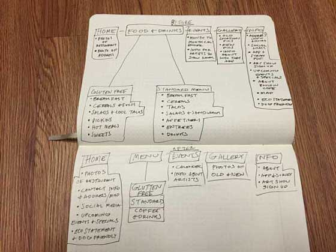
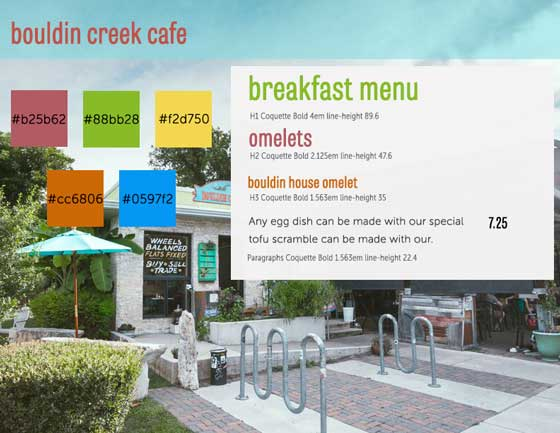
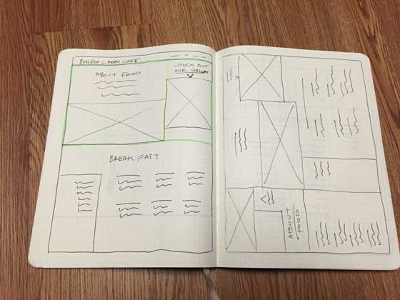
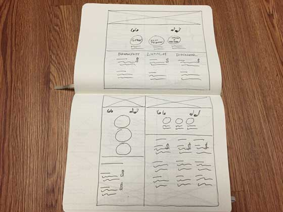
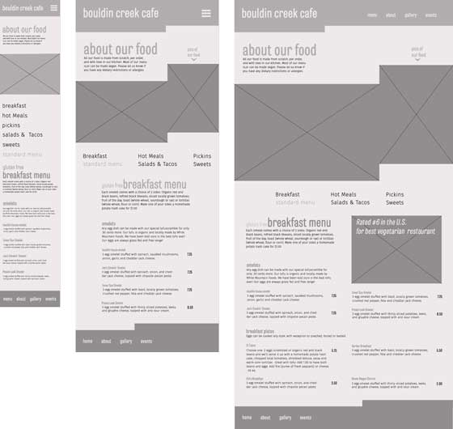
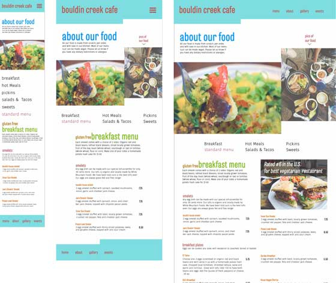

bouldin creek cafe
Bouldin Creek Cafe opened in May of 2000. It was born out of both the desire to build community and preserve the character of an artsy laid back college town in the midst of growth and development. At first a small menu was provided as a means of bringing people together, but as people relished the unique vegetarian offerings, Bouldin Creek evolved into a full-scale vegetarian eatery and reputable coffee bar.
As of 2008, Bouldin Creek has been in a large locationtt and has faced challenges with keeping their at home feel. Based on customer research, the site feels very outdated and the colors make it hard to navigate. There's a lot of interesting info about Bouldin, but it's hidden within the content without any hierarchy.The menu has more links than needed and makes you wonder why they vcouldn't have been together.
My goals for the Bouldin Creek project are to keep the "keep Austin weird" feel, but bring a fresh style to the website. I plan to bring a familiar color system that shows off their fun personality. By offsetting content, I will show off their eclectic nature. I also want to take out any unessesary menu links that could easily be combinded.
The process started by researching the Bouldin Creek website as much as possible. I wanted to really understand who they were, and what they were all about. Later on, I spent time at the cafe trying to get a feel for the atmosphere. I spent time around every corner of the restaurant getting pictures with my photographer friend, Chris. As we looked around I could see a common color pallet.
  Once I took in everything from Bouldin Creek, I quickly wrote down every word I could think of. After going over my list, I asked a few people that have been there to see what words they thought of. Once I got my list started, I dived into the site again. I looked over all of the unesscessary content and tried to combined whatever I could.
 I came up with three style tiles, and let critiques help me pin point the best one. A few adjustments were made later on in the comp phase to color, but I knew at this point the direction to go in, and it was time to bring my sketches to life in photoshop.
My sketchesing spree ended with layouts, I drew quickly, and tried not to worry about the details. I ended up wih ten sketches of possible ideas for the layout. I narrowed it down to two, and decided to let a wireframe help me decide the winner.
 When deisgning the wireframes, I started to see places were my sketches needed improvement. With a few tweeks, and an extra image about Bouldin Creeks ranking, I was on my way to incorperate color from my style tile.
Once color was introduced, things really started to become more clear. I realized pretty quickly that yellow text doesn’t contrast well over a white background (even though I wanted it to.) I also added a black background with an opacity to the ranking img text. It becomes difficult at times to see white text over images, and the black helped for clarity.
To keep it fun, and give it a clean, organic feel, Tablet Gothic Compressed was used for all of the headers. Fira Sans 2 was used for the body copy and as well as the links. All headers and body copy will be kept low-case to keep the care-free vibe.
by TypeTogether
h1,h2,h3
a b c d e f g h i j k l m n o p q r s t u v w x y z
by Mozilla
p,a
a b c d e f g h i j k l m n o p q r s t u v w x y z
Tablet Gothic Compressed | light | 4.75rem | 1.4
Tablet Gothic Compressed | light | 3.5rem |1.4
Tablet Gothic Compressed | light | 2.75rem | 1.4
Tablet Gothic Compressed | light | 1.75rem |1.4
this is a paragraph Any egg dish can be made with our special tofuscramble for only .50 cents more. Our tofu is organic and locally made by White Mountain Foods. We have been told ours is the best tofu ever! Our eggs are always grass fed and free range!
Fira Sans 1 | Ultralight | 1rem | 1.4
this is a linkFira Sans 1 | Ultralight | 1.5rem | 1.4
The colors chosen for Bouldin Creek were based off of the bright colors used outside the restaurant and the vegetarian food inside. The plan was to give it a whimslical feel, without overloading the site with content.
Primary colors will be used for the menu header, h1, h2, and links. Use white instead of darkred on header navigational links.
Secondary colors will be used for items that are glutten free or vegan friendly. Black will be used for body copy.
The grid system used for Bouldin Creek is made by using a media querie with percentages. The 16 column grid starts after the first querie and doesn’t have a gutter, making it easier to put images together. Before and after, in css, is used for the header and footer after the first media querie.
@mixin grid ($col-num){ width: ($col * $col-num)+($gut * (($col-num)-1)); margin-right: $gut; }
$col:6.25%; $gut:0%;